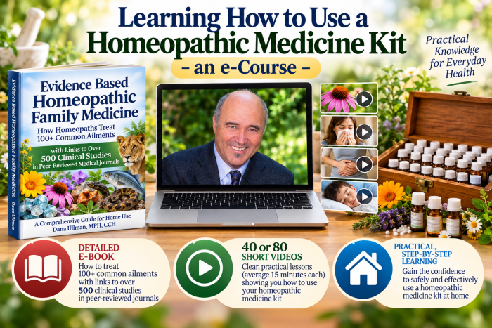

Learning how to use a Homeopathic Medicine Kit – an eCourse — 40 Videos + ebook
by with Dana Ullman, MPH, CCH
Item # ZHFM-40
A new eCourse with 40 videos with Dana Ullman, MPH, CCH
Learning to Use a Homeopathic Medicine Kit: A Multi-media eCourse
with DANA ULLMAN, MPH, CCH
► Become the “homeopath in your home”
► Learn to use a “homeopathic medicine kit”
► Learn how to use 100 homeopathic medicines for common ailments
This e-course includes:
► 40 short videos (between 5 and 25 minutes in length)
► A 700+ page ebook entitled “Evidence Based Homeopathic Family Medicine” (this ebook alone sells for $99.95!). Besides teaching you how homeopaths treat 100+ common ailments, you will also be given reference to and description of 500+ scientific studies published in peer-review medical journals that evaluate the efficacy of homeopathic treatment.
► 400+ Powerpoint slides
To explore our more comprehensive e-course with 80 (!) short videos, click HERE!
► What this e-course offers (a short video)
► Why this e-course can be beneficial to you and your family (a short video)
► Why this e-course can be beneficial to health and medical professionals (a short video)
► Meet the Teacher of this e-course (a short video)
► Here is a SAMPLE video from the e-course! This is video on “Infant & Childhood Remedies: As Simple as A B C & P!”
TESTIMONIALS: (the below testimonials encourages health & medical professionals to take this e-course, but please know that this e-course is also wonderfully practical to anyone with an interest in treating themselves and their families with homeopathic medicines):
“Dana Ullman is a brilliant educator, and by taking this course the clinician will be provided with the ability to help their patients heal. His is clear, coherent, interesting, and very insightful for both the basic and the intricacies of Homeopathy. Health and medical professionals will benefit in a profound way by learning how to select homeopathic medicines to their medical bag. And this way we can expand our medical bag with knowledge. You can provide REAL benefits to your patients by learning how to use homeopathic medicines for treating common illnesses, like ear infections, respiratory allergies, sinusitis, injuries, PMS, and many other conditions for which conventional medicine has little safe or effective treatments. One can learn to prescribe homeopathic medicines in conjunction with or as an alternative to conventional medications. Dana Ullman’s e-course may be the best modern way to learn how to use homeopathic medicines and to understand the science as well as access the 300+ clinical studies published in peer-reviewed medical journals. As more and more of our patients desire safe cost effective alternatives ( and of course prevent potential side effects and excessive cost), they will come to see you with a new interest in their health. I have been in practice for over 40 years and have used homeopathy successfully on my family and patients for many years. This is a course that every family physician should take. As Dana weaves stories, history and facts we receive a tremendous gift of knowledge!”
Edward(Lev) Linkner MD, ABIHM
Private Practice Ann Arbor, MI
Associate Clinical Professor, University of Michigan Medical School, Dept of Family Medicine
E-Course Options:
- Beginner’s E-course (15 videos) — $197.00
- Introductory E-course (25 videos) — $297.00
- Homeopathic Healing Solutions (40 videos) — $295.00
- Homeopathic Family Medicine Chest (60 videos) — $379.00 (discounts available)
- Homeopathic Medicine Chest Mastery (80 videos) — $497.00 (discounts available.)
TO PLACE AN ORDER FOR THIS COURSE, order HERE or call us at 510-649-0294
- Why this course may be vitally important to you and your family…
- What this course offers…
- Who is the teacher of this course?
Why this course may be vitally important to you and your health…
“First, do no harm” was the sage advice given by Hippocrates, the Father of Medicine. Although this practical advice was originally directed at physicians, it is wisdom for ALL of us, both doctors and patients!
We, as a species, have survived as long as we have because that doctor inside each and every one of us has skills, real skills, at defending itself and healing itself from a variety of infective agents, environmental poisons, psychological traumas, and nutritional stresses. We could not have survived to this very day without the real skills of this inner doctor.
The bottom line is that homeopathic medicines have been used by hundreds of thousands of physicians and tens of millions of mothers and fathers and individuals who learned how to use a homeopathic medicine kit for treating basic health problems. It is not only important to have a homeopathic medicine kit in the home; it is also important to know how to use it.
The present-day medicine cabinet needs an overhaul in most homes, and by taking the course that offered here, you will learn to use a homeopathic medicine kit for many common accidents and ailments that you and your family may experience …this can and will not only provide tangible health benefits…but may save the average family a great deal of money as well as an equally great amount of time.
This course will teach you how to treat many common health issues, whether it be for various 1st aid ailments of accidents and injuries as well as various acute ailments ranging from colds and coughs to fevers and flus to ear infections and throat infections, menstrual cramps and bladder infections, allergies and headaches, and arthritic conditions and indigestion, amongst many others.
All you need to do is have just ONE experience where you or your child’s flu lasted just 1 or 2 days instead of 4 or 5 days, and this course will have more than paid for itself. Then, if or when you or your child is injured, and the injury is healed a lot faster is when this course begins to give you additional significant dividends. Not only will your family become healthier, but you will have the potential to save a lot less time-off from work or school. Once again, more dividends for YOU!
Numerous surveys have found that people who use homeopathic medicines use conventional drugs a lot less often…and this means that you may not be suffering from as many side effects that these conventional drugs create, many of which are actually worse than the original disease itself.
In learning to use a homeopathic medicine kit in your own home, you will immediately become a part of a 200 year tradition that is deep and wide. Homeopathic medicine kits were not just used from the mid-1800s on the American frontier, but even more so by parents in each of the major cities. Virtually every one of the several dozen surveys ever conducted that asked the question of who uses homeopathic medicines consistently discover that the more educated people are, the more likely they are to use homeopathic medicines.
It is therefore not surprising that England’s Royal Family have used a homeopathic physician and a homeopathic medicine kit since the 1830s. Even six Popes during the 19th and 20th centuries used homeopathic medicines and/or gave the highest honors that a Pope can give to a non-clergyman to select homeopathic physicians who used homeopathic medicines to save lives. Can you believe it that some skeptics assert that homeopathy is some type of “new age” treatment? As “new age” as the Queen of England and as the Pope!
You too can become a part of this international tradition of using safer medicines FIRST to treat many common ailments of members of their family. The future is calling…and it is thanking you for taking this course now.
What this course offers…
This homeopathic family medicine course will ultimately teach you how to use over 100 homeopathic medicines that can be used treat common injuries and ailments which infants, children, adults, and the aged experience. Even more, this course will teach you what homeopathy is and isn’t as well as important, even fundamental principles of natural healing that will help you understand what real healing is about.
In fact, you will even learn about conventional medicine by learning about homeopathic medicine. The reason I say this is…if and when you travel to other countries and visit and even experience other cultures, you begin to understand your own culture more. There are so many things that we take for granted in our own culture that it is truly refreshing and enlightening to see how other people do and experience life.
Similarly, by understanding an alternative model of healing that homeopathy provides, you will better understand the conventional medical model…and you might actually come to realize that the homeopathic model makes more sense to you and that this science and art of healing is equally valid. That said, this course ultimately teaches and embodies an integrative model of healing that encourages the utilization of the best that conventional medicine offers as well as the best that natural and homeopathic approaches to healing provide.
This course in “Learning to use a homeopathic medicine kit” offers your choice of 40, 60, or 80 short videos that explain important principles of healing, basic and vital concepts of homeopathic medicine, and how to treat dozens of common health problems.
In addition to having access to all of these videos, you will also receive a highly detailed ebook called “Evidence Based Homeopathic Family Medicine” which describes the homeopathic treatment of over 100 common ailments. It also provides summary of and reference to over 300 scientific studies that have been published in peer-review medical journals. The videos and the ebook will be readily accessible via the cloud. Then, you will get a file of between 400 and 700 (!) Powerpoint slides, depending upon which course you choose, so that you can easily review any time you wish the video information you have watched.
Together, this is an effective way to learn how to use a homeopathic medicine kit…and it is a good first step in helping to secure better personal and family health.
This course will not teach you how to treat serious medical problems such as cancers, heart disease, diabetes, and the like, though research in peer review medical journals have often shown that people who use homeopathic medicines need to take conventional drugs much less often…and because conventional medicines are often known to cause various serious side effects, the use of homeopathic medicines provide you with this additional potential benefit of reduced side effects.
The challenge that YOU out there have is that you can really benefit from learning which homeopathic medicines should be in YOUR medicine cabinet…and YOU need to learn how to use them! This multi-media course, with videos and accompanied ebook, is the BEST and most user-friendly way to learn how to use a homeopathic medicine kit at your home or office.
You may want to take this multi-media course to learn how to use a homeopathic medicine kit for yourself. You may even want to purchase this course for another family member or friend…or maybe for a special doctor or nurse that you think will really benefit from this course. For a smaller amount of money, you may want to purchase a part of this course OR if you already know a lot about homeopathy and have personally experienced the regular MIRACLES that homeopathic medicines create, you may want to help us reach out to people all over the world in order to spread this natural medicine to mothers and fathers who want a healthier family, to smart individuals who want to safer medicines, and to health and medical professionals who want to add additional tools to their health care services.
If you want us to be able to promote this multi-media course to the world, please consider simply donating to our promotional efforts.
NOW is your opportunity to take this next step with me.
Are you IN?
Please join the homeopathic revolution…let’s revolutionize the modern medicine cabinet to make it a lot healthier for you and your family!
Who is the teacher of this course?
My name is Dana Ullman, and homeopathy is not simply my job or my career. It is my life and it is my passion. And my intention is to not only teach you how to use a homeopathic medicines but also light a fire of passion in you to begin to treat yourself and your family with these natural medicines…and for those of you who are health and medical professionals, my intention is to encourage to incorporate them into your daily practice.
I got involved in homeopathy at the tender age of 19 years old, when I was a junior at UC Berkeley. As the son of a physician, it was somewhat magical that he was both a pediatrician and allergist…allergy, you know that specialty that uses small doses of an allergen that may cause symptoms in order to heal the allergy.
You may know that I’ve written several books on homeopathy. Actually, over the years, I’ve written 10 books on homeopathy, the first of which was published in 1984. This first book was “Everybody’s Guide to Homeopathic Medicines,” which I coauthored with Dr. Stephen Cummings, and we’ve updated it several times since then, including in 1991, and 2004.
I’ve also written “Homeopathic Medicines for Children and Infants” and “Homeopathy A-Z”…as well as two books to which the Foreword was written by the Physician to Her Majesty Queen Elizabeth II, including “Discovering Homeopathy: Medicine for the 21st Century” and “The Homeopathic Revolution: Famous People and Cultural Heroes Who Choose Homeopathy.”
The primary purpose of my writing has always been to introduce homeopathy and homeopathic medicines to people who might benefit from learning how to use them…and to health and medical professionals who might use these powerful natural medicines to treat themselves and their patients.
I have sought to update the 19th century words and concepts of homeopathy’s origination in order to speak the language of today…and then, to introduce homeopathic principles and medicines in user-friendly ways so that people not only better understand homeopathy but feel confident enough to use these amazing medicines.
Most people get turned on to homeopathy by having a personal experience with it. The fact that homeopathy became exceedingly popular in the 19th century as a result of its impressive successes in treating infectious disease epidemics of that era, including cholera, typhoid, yellow fever, and scarlet fever, homeopathy was shown to have dramatic effects in real infectious diseases and even in life-threatening ailments.
However, before trying homeopathy, some people need convincing. Some of these people want or need research, and although there is always a need for more research, there have already been literally hundreds of studies that show the efficacy of homeopathic medicines.
One survey of physicians who were asked what it takes for them to adopt a new treatment found that good scientific research was just one of the important factors that led to such change. These physicians also asserted that an equally important factor that determined whether they would adapt a different treatment was simply when someone who knew and/or respected told them that the treatment was especially worthy.
Well, my most recent book, “The Homeopathic Revolution,” recounts and chronicles the stories of hundreds of physicians, scientists, world leaders, clergy and spiritual leaders, literary greats, world musicians, and super stars athletes. Even my own father was strongly influenced to express interest in homeopathy when he discovered that one of his own personal heroes, Yehudi Menuhin, the world-class violinist and philanthropist was the President of England’s leading homeopathy organization.
One of my greatest honors was when my Alma mater, UC Berkeley, published a four-page interview with me in their alumni magazine.
I have also had the pleasure and the honor to speak at many of the most respected medical schools and universities in the United States, including UC Berkeley and Stanford, New York University and Duke School of Medicine.
But my greatest pleasure and honor is to speak and teach you. You see, every person begins to use homeopathic medicines ultimately tells someone else about their experience…and that person tells another…and that person tells another.
Let’s get this teaching started…please join this course and let’s start this medical revolution.
The VIDEOS…listed below… each are 5 to 25 minutes long!
(Note: The 40 videos that are listed below and are flush-left; those 20 more videos that are indented once will be added to the first 40 videos, totaling 60 videos; and those 20 more videos that are indented TWICE will be added to the 60 videos, totaling 80 videos)
o Introduction to this e-Course
o The History & Worldwide Usage of Homeopathic Medicine Kits
o The Wisdom of Symptoms and Disease
- The Wisdom of Symptoms and Disease (Part II)
- The Wisdom of Symptoms and Disease (Part III)
o Different Types of Symptoms
o Specifics of the Healing Process
o Suppression of Symptoms and Disease
o The Language of Healing vs. the Language of War on the Body
o My Love/Hate Relationship with Conventional Medicine
o Energy Medicine and Whole Person Healing (Part I)
- Energy Medicine and Whole Person Healing (Part II)
- Energy Medicine and Whole Person Healing (Part III)
o The Homeopathic “Law of Similars”
o The Homeopathic Law of Similars, Part II
o How Homeopathic Medicines are Made
o The Experimental Basis of Almost Every Homeopathic Medicine
o The Unique Homeopathic Pharmaceutical Process
o Why Homeopathy Makes Sense and Works (Part I)
- Why Homeopathy Makes Sense and Works (Part II)
- Why Homeopathy Makes Sense and Works (Part III)
o The Homeopathic Interview (Part I)
- The Homeopathic Interview (Part II)
- The Homeopathic Interview (Part III)
o The Homeopathic Interview for Infants & Children
o Guidelines for Potency Selection
o Guidelines for Dosage in Acute Care
- When to Re-prescribe
- When to NOT Re-prescribe
o Care and Storage of Homeopathic Medicines
o Classical Homeopathy and “Commercial Homeopathy”
o What can Antidote a Homeopathic Medicine?
o Homeopathic First Aid Remedies
o Homeopathic First Aid Remedies (Part II)
- Head Injuries
- Carpal Tunnel
o Homeopathic External (Topical) Remedies
- Different Types of External Remedies
o Really Understanding Infections
o Infant and Childhood Remedies: As Simple as A-B-C & P!
o Other Earache and Sore Throat Remedies
o Treating the First Stage of Infections
o Treating the Second Stage of Infections
- Treating The Common Cold and Respiratory Infections
- Understanding Allergies
o Common and Special Homeopathic Medicines for Allergies
- Hives
- The Skin (Eczema & Psoriasis; Poison Ivy/Oak/Sumach)
- Herpes
- Varicose veins
o Women’s Health: PMS/Premenstrual Syndrome
o Women’s Health: Vaginitis
o Women’s Health: Bladder Infection
- Morning Sickness
- Labor and Childbirth
- Mastitis (Breast infection)
- Lactation and Nursing
- Women’s Health: Menopause
- Women’s Health: Menopause (Part II)
- Menopause: Hot Flashes
- Osteoporosis
o Insomnia
o Arthritis & Musculoskeletal Ailments
- Homeopathics for Musculoskeletal Ailments
- Backache
- Leg cramps & Restless Legs Syndrome
- Nerve Pain
o Indigestion, Nausea, and Heartburn
- Hangovers & Over-indulgences
- Stomach cramps
- Motion sickness
o Headaches (Part I)
- Headaches (Part II)
- Headaches (Part III)
- Dental Problems
- Canker sores
o Chronic Fatigue Syndrome
- Pre- and Post-Surgical Procedures
- The “Not Well Since” Syndrome
o How to Talk to Skeptics about Homeopathy
o Books for Learning Homeopathy
TO PLACE AN ORDER FOR THIS COURSE, CALL 510-649-0294…or order HERE (and send us an email to let us know which course version you prefer: email@homeopathic.com

By Dana Ullman, MPH, CCH — founder of Homeopathic Educational Services and author of 10 books on homeopathy. About Dana →
More from Video / DVD